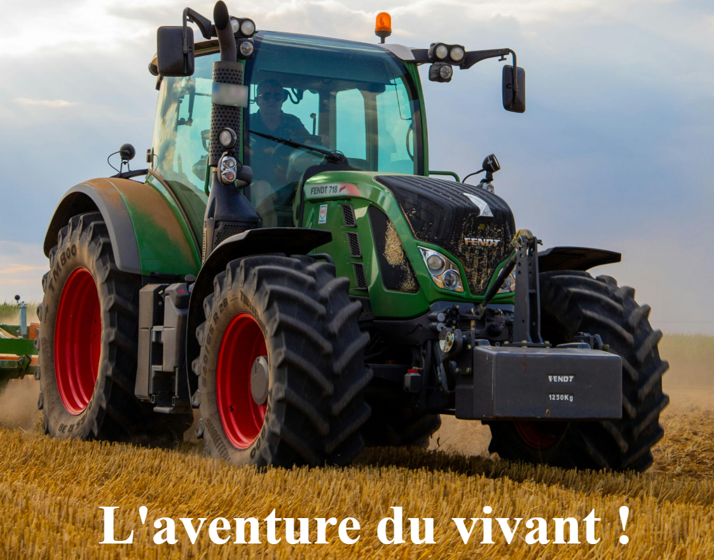
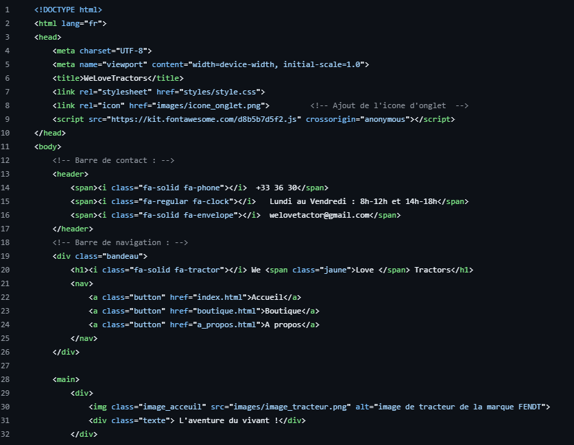

Présentation :
L'objectif de ce projet était de créer un site web sur le thème de notre choix.
Le site web possède une
page
d'accueil où l'on y retrouve les dernières actualités agricoles.
Celui-ci possède également une boutique
redirigeant vers les boutiques officielles de John Deere, New Holland et Claas.
J'ai alors développé
mes
compétences en HTML et CSS.
Le site web est responsive et est validé par le W3C.
Avec ce projet, j'ai appris :
RT3 - Créer des outils et des applications informatiques pour les R&T
Niveau 1 : S'intégrer dans un
service informatique :
Ma Contribution :
Une bonne partie du travail consistait à rendre le site agréable à utiliser, que ce soit sur ordinateur ou sur téléphone. Le côté responsive m’a demandé beaucoup d’essais, surtout pour bien placer les images et les textes, mais ça m’a permis de progresser ! J’ai aussi veillé à ce que le site soit propre techniquement, en vérifiant qu’il respecte les normes du W3C. Ce projet m’a surtout permis de travailler en autonomie : je cherchais des solutions quand je bloquais, je m’organisais dans mon travail, je corrigeais mes erreurs, etc...
Preuves :
Site web :
Code :
Analyse du projet et auto-évaluation :
Ce projet m'a permis d'améliorer mes compétences en développement web. C'était un projet tout
particulièrement stimulant que j'ai beaucoup apprécié car j'ai travaillé sur un domaine que j'apprécie :
l'agriculture.
J'ai rencontré des difficultés lors
de ce projet, tout
particulièrement avec le CSS et l'emplacement des images et du texte.
De plus, j'ai eu des difficultés
pour adapter le site web pour les téléphones (responsive).
Pour m'aider à résoudre ces difficultés j'ai lu
un grand nombre de documentations sur le développement web.
Je suis plutôt satisfaite de ce projet,
j'ai
beaucoup appris !
Pour les prochains projets je souhaiterais ajouter du JavaScript afin d'avoir un site
web encore plus complet !